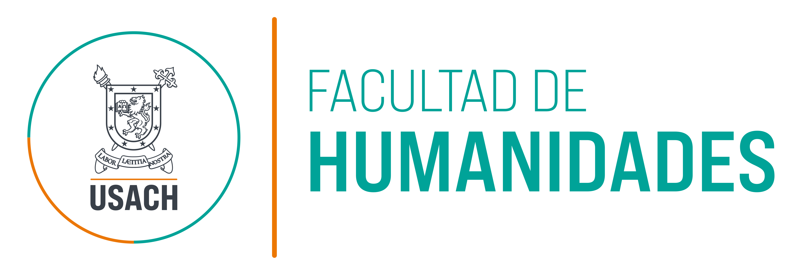

Postgrados
Revisita las dinámicas y trayectorias vinculadas a los postgrados de la Facultad de Humanidades: gestión, cifras, comunidad e iniciativas.
Los postgrados y el presente
Los estudios de postgrado ocupan hoy un lugar central tanto en las universidades como en la vida de las sociedades contemporáneas. Son el espacio donde se forma quien investiga, se especializa o diversifica sus modos de actuación o comprensión en las dinámicas comunes, se actualizan dinámicas profesionales y docentes, y se elaboran las preguntas requeridas para la actualización colectiva. En la Facultad de Humanidades estos procesos adquieren la especificidad de vincularse a procesos que implican la memoria social, la lengua, la educación, la cultura y la política, es decir, las materias con que una comunidad interpreta su pasado y decide su porvenir.
Al año 2026, la Facultad de Humanidades y el Instituto de Estudios Avanzados administran en conjunto un total de quince programas de magíster y doctorado. Este cuarto boletín de cuenta extendida reúne, en cinco apartados, lo que el Vicedecanato de Investigación y Postgrado ha articulado gracias al trabajo desarrollado por sus equipos académicos, que implican la existencia de un Consejo regular, nuevas forma de gestionar su información, la investigación de sus estudiantes, las cifras que describen su comunidad y las iniciativas culturales que impulsadas en conjunto.
Con este boletín, el Vicedecanato de Investigación y Postgrados finaliza su participación en la cuenta extendida. Esperamos que las cifras, relaciones, procesos y plataformas que aquí se informan, brinden una perspectiva que promueva futuros desarrollos y faciliten las actividades de recuperación de información y gestión de los programas y equipos de postgrado de la Facultad de Humanidades e IDEA.
Un Consejo regular
Desde el año 2022, la Facultad de Humanidades constituyó operativamente un Consejo de Postgrados, espacio que convoca y en que participan quienes ostenten las direcciones de programa, sus coordinaciones y personal administrativo, integrando sus quince programas y el Vicedecanato de Investigación y Postgrado. Los aspectos que originan la instancia se relacionan con que las decisiones que afectan a todos los programas sean dialogadas, esperando articular la heterogeneidad de propósitos y dinámicas de cada uno de los postgrados, derivando en acuerdos concretos de trabajo.
Desde el año 2026, este espacio ha sido formalizado mediante una resolución interna. Su valor radica en su regularidad y su periodicidad, permitiendo anticipar los proceso, articular propuestas emergentes desde los programas y compartir aprendizajes. Este espacio no reemplaza la administración de los programas a través de sus comités, sino brinda un lugar para la coordinación y actuación colectiva de postgrados.
Características del Consejo de Postgrado FAHU e IDEA
Preside y guía la articulación del Consejo para todos los efectos.
El Consejo se integra por las direcciones de programas, sus coordinaciones y apoyos administrativos.
Convocados a sesiones específicas cuando su participación se vincula a los propósitos del Consejo.
En concordancia con los Criterios y Estándares de la CNA-Chile, para los programas de magíster y doctorado administrados académicamente por la Facultad.
Una nueva gestión de información de postgrados
El Vicedecanato ha sostenido las actividades regulares de actualización de los cuerpos académicos de acuerdo a orientaciones de la Comisión Nacional de Acreditación (CNA) y ha facilitado el desarrollo de iniciativas de articulación docente entre programas a través de los Cursos de Formación Multidisciplinar. En pos de promover trayectorias académicas, asimismo, ha participado además en el ordenamiento de los procesos de jerarquización y encasillamiento académico.
Considerando que todos los anteriores procesos contemplan múltiples flujos, producción de información, a fin de evitar su registro en plataformas y sistemas diversos, se ha construido una plataforma web de gestión, denominada Gestión de Información VIP, que actualmente integra tres subsistemas en operación que siguen principios comunes: una fuente única de datos, roles de acceso diferenciados y una visualización pública cuando la información lo permite.
Cabe destacar el papel de los Cursos de Formación Multidisciplinar en estos procesos. Como una iniciativa emergente del Consejo de Postgrados, esta infraestructura permite a los programas ofertar y conocer la disponibilidad de cursos puestos a disposición por los comités de programa de postgrado a estudiantes de otros programas, a fin de ser planeados y considerados como parte de su oferta formativa (por ejemplo, de Cursos Electivos). Ello no solo promueve la formación multidisciplinaria, sino hace promueve el rendimiento de los mismos cursos y expande los vínculos y relaciones de quienes se forman en la Facultad de Humanidades e IDEA.
Buscador de resoluciones, reglamentos y decretos con estado de vigencia y visor de PDF. Un panel con cuentas permite cargar y reemplazar documentos sin intermediarios.
Oferta semestral de cursos abiertos entre programas: 94 cursos en 2026, filtrables por programa, tipo, jornada y día, con matriz ordenable y gráficos. Cada dirección de programa edita su propia oferta.
Ficha de cada académica y académico: ingreso, jerarquía, hitos de jerarquización con sus respaldos y evaluación automática de los criterios de encasillamiento. Solo para la gestión interna.
Un solo portal reúne los tres subsistemas. La consulta de la normativa y de los cursos es abierta, habilitando la posibilidad de gestionar información a perfiles específicos. Los paneles de edición y el subsistema de trayectorias académicas exigen cuenta institucional, que el Vicedecanato entrega por invitación al correo USACH.

Investigación de estudiantes
Doscientas cincuenta y siete tesis dirigidas entre 2024 y 2025 dan cuenta de las labores de investigación y desarrollo de los postgrados de la Facultad e IDEA. En esta síntesis queremos exponer los elementos que caracterizan al respecto a cada programa, qué líneas de investigación o desarrollo prevalecen, qué temas trata y en qué medida se vincula con proyectos de investigación con financiamiento.
En de cada subyace un trabajo intenso por parte de estudiantes, así como la labor de coordinación y seguimiento sostenido por los comités de cada programa, la composición de los cuerpos académicos (claustros, núcleos y profesorado colaborador). Asimismo, es fundamental la labor de los equipos de Biblioteca, que coordinan las instancias finales que hacen factible la adecuada visibilización de los trabajos que han sido aprobados. Las cifras aquí expresadas, han sido reconstruidas por estos equipos.
Tesis por programa
La producción está concentrada: el Magíster en Educación mención Currículum y Evaluación reúne por sí solo una de cada cinco tesis del periodo, y los cinco programas mayores suman el 60% del total. La barra muestra la distribución por año de graduación.
Programas y líneas de investigación
Cada tesis hereda las líneas declaradas por su profesora o profesor guía. La matriz cruza ambas dimensiones: las líneas de historia, pensamiento y cultura atraviesan varios programas, mientras currículum, evaluación y epistemología se concentran en uno o dos.
Principales temáticas por programa
Temas detectados sobre los títulos y resúmenes de las tesis. Una misma tesis puede tratar varios; el porcentaje indica qué proporción del programa aborda cada tema. Al no ser categorías excluyentes, la suma de los temas de un programa supera el 100%: no es una distribución, sino la cobertura de cada tema sobre el total de tesis del programa.
Tesis y proyectos de investigación
Treinta y seis tesis declaran haberse desarrollado en el marco de un proyecto con financiamiento externo entre 2024 y 2025, distribuidas en 32 proyectos distintos. A continuación se expresa su frecuencia y los tipos de proyectos asociados.
Fuentes: registro de tesis con profesor guía del postgrado de la Facultad y registro de tesis del Instituto de Estudios Avanzados, acotados al periodo 2024–2026; los registros disponibles llegan hasta 2025, sin tesis con año de graduación 2026. Los registros comunes a ambos archivos se cruzaron por título; se excluyeron las tesis de programas ajenos a la Facultad y se unificaron las variantes de nombre de un mismo programa, incluidas sus menciones. Las líneas de investigación provienen del último campo del registro de postgrado, que consigna las líneas declaradas por cada profesor guía. Las temáticas se detectaron por palabras clave sobre título y resumen, de modo que una tesis puede contarse en más de una.
Género en la escritura y la dirección de tesis
Las mujeres escriben una mayoría clara de las tesis del periodo y dirigen bastante menos de la mitad: son el 56% de quienes las firman y el 37% de las 78 personas que las guiaron. La diferencia se distribuye de diverso modo entre programas: en algunos la dirección es mayoritariamente femenina y en otros no figuran profesoras guía.
Fuente: registro de tesis con profesora o profesor guía 2024–2025 (253 tesis). El género de autoría y dirección fue inferido a partir del nombre de pila, por lo que se trata de una aproximación: una tesis quedó sin atribuir y los registros no recogen identidades de género declaradas por las propias personas. La temática principal corresponde a la clasificación única asignada a cada tesis en ese registro.
Los postgrados en relaciones y cifras
Quince programas, ocho unidades académicas y una comunidad que se renueva cada año. Las cifras de este apartado provienen de los registros de acreditación, matrícula y graduación de la Facultad entre 2024 y el primer semestre de 2026.
Acreditación de programas
Doce de los quince programas cuentan hoy con acreditación vigente ante la Comisión Nacional de Acreditación, por períodos de entre tres y siete años. Otros tres programas se encuentran en proceso de autoevaluación, con ingreso al Comité de Evaluación de Programas de Postgrado (CEPP) previsto para fines de 2026 y presentación ante la CNA en 2027.
La matriz siguiente detalla, programa por programa, la unidad responsable, la duración del plan, el año de creación, el estado de acreditación, las fechas de vigencia y los años otorgados, junto con las observaciones de cada proceso, incluidos los plazos de ingreso al CEPP y de presentación ante la CNA de los tres programas en autoevaluación.
Cómo se articulan académicos, unidades y programas
Las resoluciones de designación de cada programa de postgrado nombran a su directora o director, su comité y su cuerpo académico completo. Leídas en conjunto muestran una trama: los mismos investigadores sostienen varios programas a la vez. El diagrama considera a quienes tienen unidad identificada: los departamentos y escuelas de la Facultad y el Instituto de Estudios Avanzados.
Unidades académicas y programas
Pasa el cursor sobre una unidad, un programa o una bandaCada banda une la unidad de origen de una persona con el programa en que fue designada; su grosor es el número de designaciones. Junto a los departamentos de la Facultad aparece el Instituto de Estudios Avanzados, que sostiene buena parte de los programas de doctorado.
Composición de cada programa
Cada resolución distingue el cuerpo académico regular —claustro o núcleo, del que salen dirección y comité— de las y los colaboradores. La proporción entre ambos varía mucho de un programa a otro.
Quiénes dirigen los programas
Quince académicas y académicos dirigen hoy los programas de postgrado de la Facultad y del Instituto de Estudios Avanzados. Por sus manos pasan la admisión, el seguimiento de las tesis y los procesos de acreditación de cada programa.
Cuerpo académico de postgrado
Las 91 académicas y académicos de la Facultad y del Instituto de Estudios Avanzados que hoy integran algún cuerpo académico de postgrado, ordenados por unidad.
Programas conectados entre sí
La misma información leída entre programas: dos quedan unidos cuando comparten integrantes de su cuerpo académico. Se muestran los pares que comparten tres o más personas.
Fuentes: 36 resoluciones exentas de designación de dirección, comité y cuerpo académico dictadas entre 2023 y 2026, y la nómina de académicas y académicos de la Facultad a junio de 2026. La identidad de cada persona proviene del RUT de la resolución; la unidad, del centro de costo de la nómina. Quienes no figuran en esa nómina se contrastaron con el listado público del Instituto de Estudios Avanzados (idea.usach.cl, consultado el 1 de septiembre de 2026). En total las resoluciones nombran a 150 personas; 91 tienen unidad identificada. Para cada programa se considera la designación vigente.
Fotografías de las direcciones de programa: sitios institucionales de la Universidad de Santiago de Chile, consultados el 1 de septiembre de 2026. Su publicación en internet no implica licencia abierta: cualquier uso público o editorial debe atribuirse a la unidad institucional de origen y contar con su autorización.
Estudiantes articulados
La articulación permite que un estudiante curse de manera continua dos niveles formativos: de una licenciatura o título profesional a un magíster, o de un magíster a un doctorado. Quince estudiantes recorren hoy alguna de las tres vías activas; la cuarta, de reciente formalización entre el Magíster en Historia y el Doctorado en Historia, se encuentra aún en proceso.
Matrícula de postgrado 2024–2026
Entre 2024 y el primer semestre de 2026 ingresaron 354 estudiantes nuevos a los programas de la Facultad y del IDEA. El salto de 2025 coincide con la apertura del Doctorado en Artes y Humanidades y con la admisión anual de todos los magísteres; los dos programas con ingreso en segundo semestre —Gestión y Liderazgo Educacional y Estudios Internacionales— explican los ingresos de 2024-2 y 2025-2.
Presencia en terreno: la Expo Postgrados USACH
La vinculación de la Biblioteca FAHU con el desarrollo de nuestra unidad académica trasciende las salas de lectura. Desde 2023, nuestro equipo ha mantenido una participación ininterrumpida y estratégica en la Expo Postgrados de la Universidad de Santiago, un evento de carácter anual que despliega sus jornadas informativas en el Patio de la Escuela de Artes y Oficios (EAO) y en la explanada de la Casa Central.
A lo largo de estas sucesivas versiones, orientadas a difundir la oferta de los 56 programas de Magíster y Doctorado del plantel, la presencia de la biblioteca en los stands informativos se ha consolidado como un pilar fundamental. En este espacio, el personal no solo apoya la entrega de información clave sobre procesos de matrícula, aranceles y el acceso a las múltiples becas disponibles (incluyendo las de Emprendimiento Científico-Tecnológico de INNOVO-USACH), sino que además implementa dinámicas lúdicas de interacción: aquellos postulantes que se fotografían con el programa impreso de los postgrados de la facultad reciben de obsequio un ejemplar de la línea editorial de Humanidades. Esta iniciativa ha permitido, año a año, acercar la producción intelectual de la FAHU a la ciudadanía en un ambiente festivo animado por los concursos de Usachín.
El protagonismo de la biblioteca también ha destacado en el plano logístico y de contenidos en hitos específicos en distintas versiones de la feria:


Durante esta versión, el equipo demostró su polifuncionalidad institucional al asumir el soporte operativo, la microfonía y la compleja coordinación técnica del evento al aire libre. En dicha oportunidad, la Jefa de Biblioteca, Carolina Cabrera, lideró el conversatorio central de la Facultad de Humanidades como moderadora, guiando un espacio de diálogo donde directores, jefas de programa y postulantes interactuaron mediante preguntas en vivo sobre el valor de los egresados FAHU como agentes de cambio social.
En la versión del año siguiente, la jornada de difusión estuvo marcada por la participación de altas autoridades de la universidad. En los conversatorios en terreno, el Vicerrector de Postgrado, Dr. Humberto Prado Castillo, junto al destacado profesor titular de IDEA-USACH y Premio Nacional de Historia, Dr. César Ross, expusieron ante la comunidad los desafíos del conocimiento avanzado, relevando el valor y el prestigio de formarse en la vanguardia científica y humanista de la USACH.
Con este recorrido, la Biblioteca FAHU reafirma que su compromiso con el postgrado es una labor sostenida en el tiempo, aportando tanto soporte técnico como mediación cultural en cada edición de este gran encuentro universitario.

Graduados 2024–2026
Trescientos seis grados de magíster y doctor se tramitaron entre enero de 2024 y agosto de 2026: alrededor de cien por año. Los programas de Educación y los doctorados en Estudios Americanos y en Historia concentran la mayor parte; desde 2025 el registro incorpora el sexo de las personas graduadas, con una mayoría de mujeres.
Iniciativas de estudiantes de postgrado
Dos propuestas nacidas de estudiantes de magíster encontraron en la Biblioteca FAHU un aliado para abrir la Facultad a la música y al libro independiente.
«Entre estanterías y acordes»
Durante este año 2026, el estudiante Francisco Farías, del Magíster de Historia, se acercó a la biblioteca FAHU en busca de apoyo para desarrollar una serie de tocatas en el espacio. La propuesta surgió a partir de su participación en el sello Lardiza, donde mantiene vínculos con distintas bandas y cantautores, y es de su interés el generar nuevas instancias de encuentro entre la música y la comunidad universitaria.
A partir de esta propuesta, la biblioteca quiso acompañar la iniciativa y dar una identidad que represente la relación entre la música y el espacio bibliotecario. Así nació «Entre estanterías y acordes», nombre con el que se ha desarrollado este ciclo de encuentros musicales.
La iniciativa permite generar un espacio en el que puedan participar quienes tengan interés en compartir su música, ya sean estudiantes, profesores/as y funcionarios/as. De esta manera, el proyecto busca reconocer y visibilizar los talentos que forman parte de la comunidad y del sello, promoviendo nuevas instancias de encuentro y participación en torno a la cultura.
Hasta el momento, el proyecto ha contado con dos volúmenes y dos propuestas musicales invitadas. El primer encuentro tuvo como protagonista a Allegro, músico vinculado al sello en el que participa el estudiante. En la segunda edición, el espacio recibió a Rebeldes con Causa, agrupación integrada por estudiantes de la carrera de Historia de la Facultad de Humanidades. De esta forma, la actividad ha permitido reunir tanto a artistas vinculados a circuitos musicales independientes como a integrantes de la propia comunidad universitaria.


Las presentaciones se desarrollan en formato acústico e íntimo, inspirado en la estética de sesiones musicales como Tiny Desk, pero con una característica particular: el escenario principal es la propia Biblioteca FAHU. En este contexto, las estanterías, los espacios de estudio y el entorno dejan de ser solo el escenario de fondo para convertirse en parte de la experiencia.
Cada presentación busca poner en valor la identidad y propuesta artística de sus participantes, generando un diálogo entre la música y el espacio de la biblioteca. La ambientación también forma parte de esta propuesta, incorporando elementos propios, junto con objetos y recursos aportados por los músicos, de modo que cada encuentro pueda adquirir una identidad propia.
Con esta alianza, Biblioteca FAHU busca acompañar y potenciar iniciativas surgidas desde su comunidad, abriendo sus espacios a nuevas formas de encuentro, creación y expresión cultural. La experiencia también contribuye a fortalecer la vinculación con el medio y ampliar la idea de la biblioteca como un espacio vivo: un lugar para estudiar, investigar, compartir y también disfrutar de la música y la cultura.
Feria del Libro FAHU 2026

La propuesta fue impulsada por Franco, estudiante del Magíster en Literatura, quien a partir de su participación en la editorial independiente Inti, se acercó a Biblioteca FAHU con la idea de organizar una Feria que permitiera visibilizar el trabajo de distintas editoriales independientes y acercar sus publicaciones a la comunidad universitaria, democratizando el acceso al libro y la cultura.
A partir de esta propuesta, la biblioteca FAHU trabajó junto a Franco en la organización de la actividad logrando reunir a más de 20 editoriales independientes y universitarias, entre ellas LOM, Odisea, Editorial USACH, La Parada Poética, Las Ekfrasistas, Antu, Noctámbula, Inti, entre otras. De esta manera, la feria se transformó en un espacio para conocer diversas propuestas editoriales y acercarse a distintas expresiones de la Literatura contemporánea.
La actividad se desarrolló durante dos jornadas, los días 22 y 23 de abril, y contó con una programación que fue más allá de la exhibición y ventas de libros. Las propias editoriales participantes fueron parte activa de la programación, ofreciendo actividades como la presentación del libro Komorebi de Phalka, perteneciente a Asiática Ediciones; un taller de escritura con imágenes a cargo de las Ekfrasistas; y un conversatorio sobre escritores y escritoras jóvenes, que contó con la participación de Francisco Ibarra, Rocio Escobar e Ignacio Silver, autores de la Editorial Inti. A esta actividad se sumó también la FEUSACH junto a la biblioteca en la realización de un concurso. La participación durante ambas jornadas permitió cerrar la actividad con una evaluación muy favorable y, al mismo tiempo, abrió la posibilidad de proyectar nuevas versiones de esta iniciativa.


Para la Biblioteca FAHU, esta experiencia representa también una oportunidad para fortalecer su vínculo con las iniciativas que surgen desde los programas de posgrado y sus estudiantes. Más allá de su función como espacio de acceso a recursos bibliográficos, la biblioteca busca consolidarse como un lugar de encuentro para la comunidad, donde la literatura, la cultura y el diálogo puedan ocupar un espacio activo dentro de la vida universitaria.
Hacia una red nacional de postgrados
La Facultad de Humanidades participó en la formulación inicial de la Red de Postgrado del Consorcio de Universidades del Estado de Chile: el proyecto «Integración de repertorios formativos de postgrados del CUECH», presentado en 2024 al Plan de Fortalecimiento de Universidades Estatales. La coordinación ejecutiva de esa etapa inicial recayó en el Vicedecanato de Investigación y Postgrado, junto a la Vicerrectoría de Postgrado de la Universidad de Santiago de Chile y la Dirección de Postgrado de la Universidad Arturo Prat.
Su articulación emergió de la necesidad de promover la matrícula de postgrado en las universidades estatales, la armonización normativas que regulan magísteres y doctorados y, sobretodo, recurrir y potenciar el rendimiento posible de operación en red por parte de los programas de postgrado. El espacio se recoge la experiencia de la red Humaniora (2010–2021) y de la Red de Artes y Humanidades del propio Consorci, como ámbitos desde los proyectar su desarrollo. Hoy la Red es gestionada por las Vicerrectorías y Direcciones de Postgrado de las universidades del Consorcio.
Qué se propuso la Red
Un Consejo de Coordinación con las Vicerrectorías y Direcciones de Postgrado, representantes por macrozona y subcomités de trabajo, para definir orientaciones compartidas y un plan a tres años.
Una oferta de cursos reconocibles entre programas del Consorcio, en modalidades híbridas o a distancia, que facilite el acceso desde distintos territorios y la conciliación con el trabajo y los cuidados.
Estudiar los reglamentos de postgrado de las universidades para abrir camino a articulaciones, dobles graduaciones y programas consorciados, con la perspectiva de género como línea transversal.
Cómo se organiza
La Red hoy

La Red cuenta con un sitio propio que reúne, en un mapa, la oferta de postgrado de las 18 universidades estatales, publica trayectorias de graduadas y graduados y mantiene una biblioteca digital. Sus encuentros nacionales —el más reciente celebrado en 2026— han puesto en agenda el trabajo colaborativo y la movilidad estudiantil entre programas.
Fuentes: formulario del proyecto Red Estructural RED24993 «Integración de repertorios formativos de postgrados del CUECH», Plan de Fortalecimiento de Universidades Estatales 2024 (12 meses, M$ 200.000; 17 universidades participantes en la formulación), y sitio web de la Red de Postgrado del CUECH.